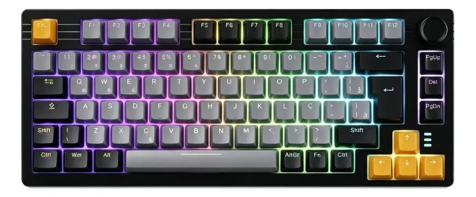

Teclado Mecânico RGB Tech Store Pro

Descrição do Produto
O Teclado Mecânico RGB Tech Store Pro foi projetado para garantir a máxima performance e durabilidade tanto para jogadores profissionais quanto para programadores. Equipado com switches mecânicos lineares de alta precisão, ele oferece uma resposta tátil ágil e silenciosa.
A sua estrutura robusta em alumínio aeronáutico garante estabilidade durante sessões intensas de uso, enquanto a iluminação RGB totalmente personalizável por tecla proporciona uma imersão visual sem precedentes no seu setup.
Especificações Técnicas
- Marca: Tech Store Components
- Tipo de Switch: Mecânico Linear (Red)
- Layout: ABNT2 (Com o caractere Ç)
- Conectividade: Cabo USB-C removível de 1.8 metros
- Material da Estrutura: Alumínio e plástico ABS de alta resistência
- Iluminação: RGB Chroma com 16.8 milhões de cores configuráveis
- Compatibilidade: Windows, macOS e Linux
Preço de lançamento:
R$ 350,00